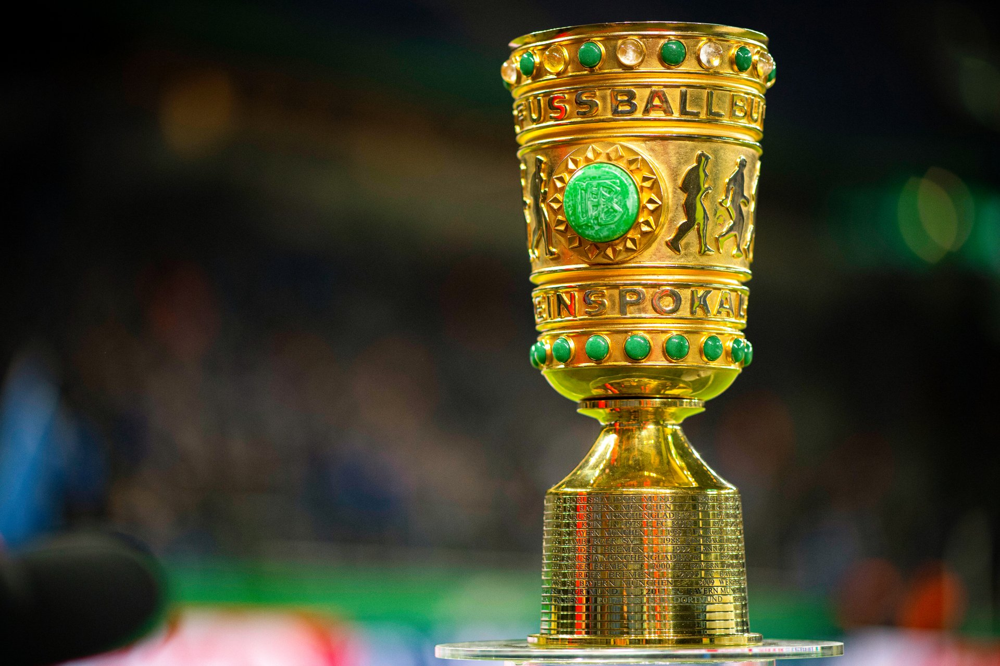

DFB-POKAL

La Copa de Alemania oficialmente "DFB-Pokal" es la copa nacional de Alemania, fue iniciada en 1935
RANKING DE MAXIMOS GANADORES
| EQUIPO | COPAS |
|---|---|
| Bayern Munich | 20 |
| Werder Bremen | 6 |
| Schalke 04 | 5 |
| Borussia Dortmund | 5 |
| Frankfurt | 5 |
| Colonia | 4 |
| Nuremberg | 4 |
| Stuttgart | 3 |
| Hamburgo | 3 |
| Borussia Monchengladbach | 3 |
| Fortuna | 2 |
| Kaiserslautern | 2 |
| Karlsruher SC | 2 |
| Dresdner SC | 2 |
| 1860 Munich | 2 |
| Bayer Leverkusen | 1 |
| Leipzig | 1 |
| Wolfsburgo | 1 |
| Rot-Weiss Essen | 1 |
| Rapid Viena | 1 |
| Uerdingen | 1 |
| First Vienna | 1 |
| Hannover 96 | 1 |
| Lokomotive Leipzig | 1 |
| Kickers Offenbach | 1 |
| Schwarz-Weiss Essen | 1 |
TODOS LOS GANADORES
| AÑO | EQUIPO |
|---|---|
| 2021/22 | Leipzig (1) |
| 2020/21 | B. Dortmund (5) |
| 2019/20 | Bayern Munich (20) |
| 2018/19 | Bayern Munich (19) |
| 2017/18 | Frankfurt (5) |
| 2016/17 | B. Dortmund (4) |
| 2015/16 | Bayern Munich (18) |
| 2014/15 | Wolfsburgo (1) |
| 2013/14 | Bayern Munich (17) |
| 2012/13 | Bayern Munich (16) |
| 2011/12 | B. Dortmund (3) |
| 2010/11 | Schalke 04 (5) |
| 2009/10 | Bayern Munich (15) |
| 2008/09 | Werder Bremen (5) |
| 2007/08 | Bayern Munich (14) |
| 2006/07 | Nuremberg (3) |
| 2005/06 | Bayern Munich (13) |
| 2004/05 | Bayern Munich (12) |
| 2003/04 | Werder Bremen (4) |
| 2002/03 | Bayern Munich (11) |
| 2001/02 | Schalke 04 (4) |
| 2000/01 | Schalke 04 (3) |
| 1999/00 | Bayern Munich (10) |
| 1998/99 | Werder Bremen (3) |
| 1997/98 | Bayern Munich (9) |
| 1996/97 | Stuttgart (3) |
| 1995/96 | Kaiserslautern (2) |
| 1994/95 | Monchengladbach (3) |
| 1993/94 | Werder Bremen (2) |
| 1992/93 | Bayer Leverkusen (1) |
| 1991/92 | Hannover 96 (1) |
| 1990/91 | Werder Bremen (1) |
| 1989/90 | Kaiserslautern (1) |
| 1988/89 | B. Dortmund (2) |
| 1987/88 | Frankfurt (4) |
| 1986/87 | Hamburgo (3) |
| 1985/86 | Bayern Munich (8) |
| 1984/85 | Bayer Uerdingen (1) |
| 1983/84 | Bayern Munich (7) |
| 1982/83 | Colonia (4) |
| 1981/82 | Bayern Munich (6) |
| 1980/81 | Frankfurt (3) |
| 1979/80 | Fortuna (2) |
| 1978/79 | Fortuna (1) |
| 1977/78 | Colonia (3) |
| 1976/77 | Colonia (2) |
| 1975/76 | Hamburgo (2) |
| 1974/75 | Frankfurt (2) |
| 1973/74 | Frankfurt (1) |
| 1972/73 | Monchengladbach (2) |
| 1971/72 | Schalke 04 (2) |
| 1970/71 | Bayern Munich (5) |
| 1969/70 | Kickers Offenbach (1) |
| 1968/69 | Bayern Munich (4) |
| 1967/68 | Colonia (1) |
| 1966/67 | Bayern Munich (3) |
| 1965/66 | Bayern Munich (2) |
| 1964/65 | B. Dortmund (1) |
| 1963/64 | 1860 Munich (1) |
| 1962/63 | Hamburgo (1) |
| 1961/62 | Nuremberg (2) |
| 1960/61 | Werder Bremen (1) |
| 1959/60 | Monchengladbach (1) |
| 1958/59 | Schwarz-Weiss Essen (1) |
| 1957/58 | Stuttgart (2) |
| 1956/57 | Bayern Munich (1) |
| 1955/56 | Karlsruher (2) |
| 1954/55 | Karlsruher (1) |
| 1953/54 | Stuttgart (1) |
| 1952/53 | Rot-Weiss Essen (1) |
| 1943 | First Vienna (1) |
| 1942 | 1860 Munich (1) |
| 1941 | Dresdner SC (2) |
| 1940 | Dresdner SC (1) |
| 1939 | Nuremberg (1) |
| 1938 | Rapid Viena (1) |
| 1937 | Schalke 04 (1) |
| 1936 | Lokomotive Leipzig (1) |
| 1935 | Nuremberg (1) |